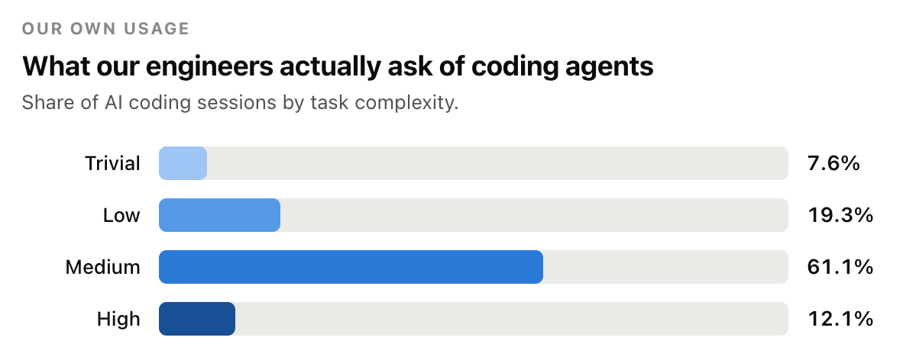
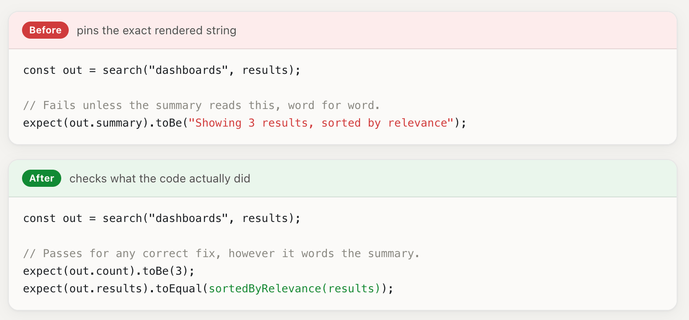
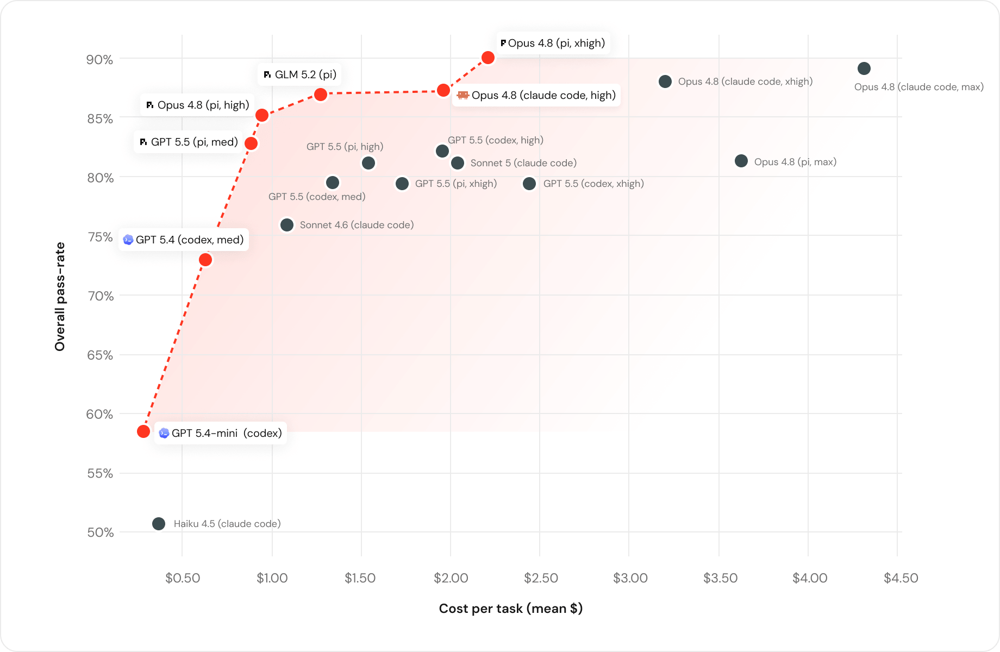
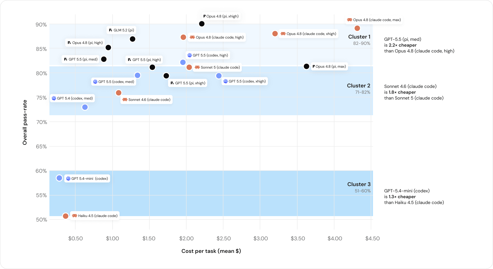
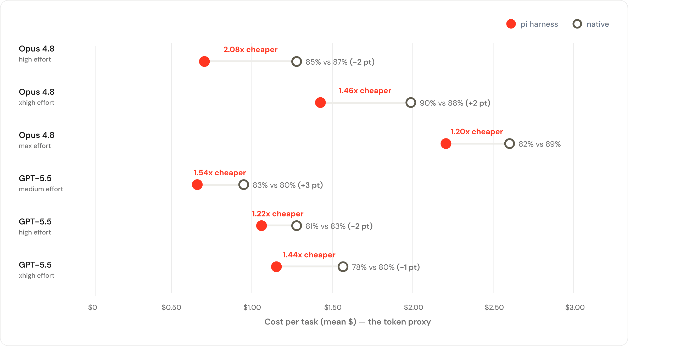
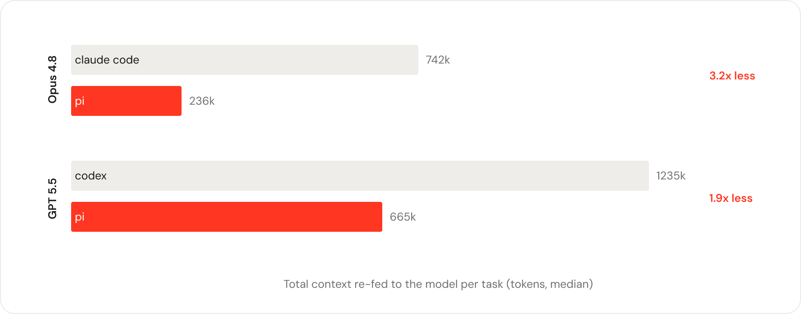

可比较，但会逐渐脱离现场
任务公开后，解法可能进入后续训练数据；同时，统一数据集难以覆盖某家公司特有的语言组合、服务边界和构建约束。
Databricks internal benchmark · visual reading
在数百万行真实代码库上，Databricks 得到的答案不是“选出唯一冠军”，而是：模型、harness、任务难度和端到端成本必须一起测。
真正要回答的，不是：
应该问：对我们的任务，哪组 model + harness 在目标质量下成本最低？
30 秒读懂
Databricks 把近期真实 PR 转成内部 coding benchmark，用隐藏测试做 pass/fail，并发现四件事：能力有明显分层；开放模型已进入最高层；token 单价不等于任务成本；harness 会显著改变上下文开销和最终成本。
公开 benchmark 会逐渐泄漏进训练数据，也不能代表 Databricks 横跨 10+ 语言与多类服务的代码库。
从人工编写、带高质量测试的近期 PR 构造任务；移除解法提示，隐藏测试，逐样本人工复核。
没有一个供应商或单一工具统治整个成本—质量前沿；日常任务应按难度路由，而不是默认使用最贵模型。
这是内部且“并不全面”的 benchmark；公开文章没有披露样本量、完整任务集与置信区间，不能当作通用总榜。
01 / Why local evidence
SWE-Bench、TerminalBench 仍然有价值，但 Databricks 要做的是工程部署决策：在自己的语言栈、构建系统、约定和测试上，哪组 agent 真正可靠且划算。
任务公开后，解法可能进入后续训练数据；同时，统一数据集难以覆盖某家公司特有的语言组合、服务边界和构建约束。
Databricks 的代码库跨越 10+ 种语言与多类服务，包括 Scala、Go、Rust、Java、Python、Bazel、Protobuf 等。真实 PR 更接近工程师日常会交给 agent 的任务分布。
关键转换是：benchmark 不再只是测模型“会不会写代码”，而是测完整工作系统能否在一个具体代码库中复现开发者意图。因此，模型能力、工具外壳、上下文管理和测试质量都进入了被评估对象。
02 / Workload portrait
Unity AI Gateway 的交互日志让团队先看到真实需求分布：61.1% 属于中等复杂度，只有 12.1% 被归为高复杂度。这直接挑战了“所有任务默认最贵模型”的习惯。

简单的配置更新、开关调整，与深入的设计探索并不需要同一档推理能力。作者据此认为，应把更多日常工作推向 Haiku 与 GPT-5.4 Mini 这一类较便宜的能力档，同时保留更强模型处理真正困难的任务。
03 / Task construction
合并过的 PR 天然包含开发意图、迭代痕迹、人类 review 和可执行测试。但它不能直接成为 benchmark：必须过滤样本、重写 prompt、隔离测试，并人工确认替代实现也能得到公平评价。
让任务反映当前框架、模式和工程约定。
排除 bot、服务账号、全 AI 生成和自动生成改动。
理解 PR 意图，删除具体解法与“为什么这个修复正确”的提示。
非测试文件成为 agent 要复现的改动，相关测试留到最终判分。
必要时重写测试或任务描述，避免过度限定唯一实现。
团队通常会重写原 PR 描述：明确问题、目标和约束，但去掉方案说明。否则，agent 只是沿着人类已经写出的推理复述答案，任务难度会被系统性低估。

这张图解释了为什么 benchmark 的测试本身也需要 review：对非确定性输出做逐字匹配，会把合理解法误判为失败。
保留：目标、问题背景、必要约束、标准开发工具，以及 PR 触及代码所依赖的完整测试目标。
隐藏：原 PR 的非测试实现、相关测试文件、解释具体修复为何正确的文字，以及任何会直接指向解法的描述。
人工修订：如果测试只允许一种写法，或 prompt 不足以唯一说明期望行为，团队会在不使用 AI 的情况下修改测试与描述。
04 / Evaluation loop
模型与 harness 使用开箱即用的标准配置，并获得 Databricks 工程师通常拥有的工具。agent 明确表示完成后，系统才冻结代码、恢复隐藏测试并判定 pass/fail。
作者明确不用 LLM judge 判正确性，因为他们观察到这种判断会奖励“说得像对的”，而不是代码实际上做对了。
这更接近工程师真实采用时的默认体验，但也意味着结果同时反映模型与 harness 的默认策略，而不只是基础模型能力。
它能较强地回答：在给定默认配置和工具环境下，某个 model + harness 是否能独立重建满足现有测试的改动。
它不能单独证明：代码可维护性、未覆盖行为、长期架构质量，或经过深度定制后的 harness 上限。测试质量仍然决定了 pass 的含义。
05 / Results
作者更关注稳定的主题模式，而不是相差一两分的名次：成本—质量前沿由多家供应商共同组成，能力形成分层，开放模型进入高能力区，token 单价与端到端成本脱钩，而 harness 本身足以改变效率。
Finding 1
图中的红色虚线是 Pareto frontier：在某个成本水平上，没有其他组合能同时更便宜又更高质量。前沿上同时出现 OpenAI、Anthropic 与开放模型组合，因此不存在一个工具在所有预算点都占优。

图上同一模型以不同 harness 或 effort 出现多个点，也说明“模型名”不是足够细的决策单位。
Finding 2
整体结果聚成三个粗略 capability tier。高档模型覆盖更广但昂贵；中低档仍能有效处理大量常见任务。Databricks 特别指出，GLM 5.2 位于最高能力层，在质量上与 Opus 4.8 被描述为统计上持平，但每任务成本是 $1.28 vs. $1.94。

Finding 3
推理效率不同，会让低单价模型工作更久、读取更多内容。原文的对比很反直觉：Sonnet 5 每 token 约比 Opus 4.8 便宜 1.7×，但在这些任务上反而花费更多、通过率更低。
token 单价更低，但工作更久、读取更多。
每 token 更贵，但端到端更省，且高 6 个百分点。
作者把差异主要归因于 Sonnet 5 消耗了 1.9× 更多 token。因此，真正需要优化的是 price per solved task，而不是静态价目表上的 price per token。
Finding 4
在相同模型与 thinking effort 下，Pi 与原生 Claude Code / Codex 的每任务成本差异在若干比较中达到 1.20×–2.08×；质量差通常较小，但并非每个设置都完全相同。原文把主要机制指向上下文管理。


作者明确没有得出“某个 harness 永远更便宜”或“原生 harness 更差”的结论。图中也存在质量变化。更稳妥的 takeaway 是：harness 与模型共同决定有效上下文、工具行为和停止轨迹，因此必须作为一个组合评测。
这也是 Databricks 投资 Omnigent、让模型与 harness 可以无缝切换的理由：保持替换能力，才能持续追踪新的 Pareto 前沿。
06 / Operational takeaway
Databricks 从“能否更高效使用 coding agent”出发，最后得到的是三个工程决策原则：按难度路由、按任务核算成本、把 model + harness 当作可替换组合。
常规配置与小改动优先较便宜能力层；深层设计或困难修复再升级到最强模型。
把总 token、运行轮次、harness 上下文策略与通过率统一折算到端到端任务成本。
持续把新模型和新 harness 放回同一内部 benchmark，更新 Pareto 前沿而不是永久固化默认值。
作者的建议很直接：任何有已合并 PR backlog 的团队，都已经拥有一批模型尚未训练过、并且由自身测试定义正确性的候选任务。
自动选择最合适模型的前提，不是通用声誉，而是持续收集“任务形状 → 组合表现 → 成本”的内部数据。
这也解释了文章最后强调的“反锁定”：锁定的不只是厂商，还包括“最贵模型总是最好”“token 单价能代表成本”“原生 harness 必然最适配”等未经持续验证的假设。
07 / Boundaries
原文主动说明该练习“并不全面”。它非常适合指导 Databricks 自己的工具选择，但公开文章提供的信息不足以支持对整个行业做稳定、可复现的模型排名。
任务、语言比例、构建系统和测试风格来自 Databricks；其他团队的 Pareto 前沿可能不同。
文章没有披露任务样本量、完整任务清单、逐任务结果或完整统计不确定性。
隐藏测试比 LLM judge 更客观，但仍只能覆盖测试表达出的行为；未测属性不会自动被验证。
结果描述开箱即用设置下的当时状态；模型、价格与 harness 都会快速变化，需要重复运行。
文章称 GLM 5.2 与 Opus 4.8 在质量上“统计上持平”，但公开正文没有展示检验方法或区间。
同一模型在不同 harness 下产生不同轨迹，因此不能把组合结果全部归因于基础模型。
不要问“今天最强的 coding model 是谁”；先建立一套能持续回答“对我们的代码和任务，哪种 model + harness 组合最可靠、最经济”的评测系统。